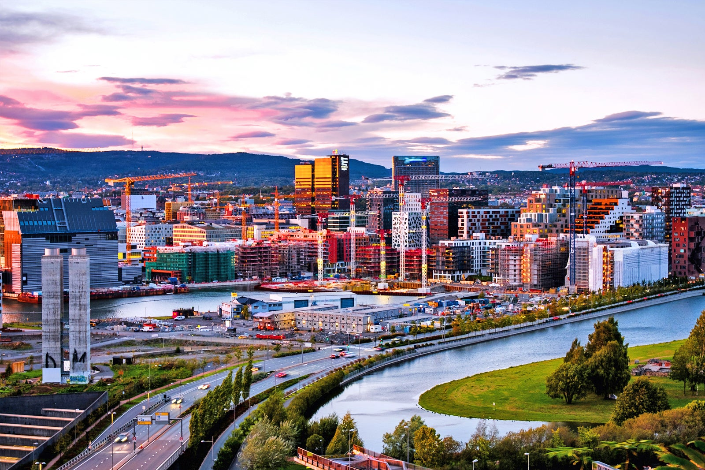
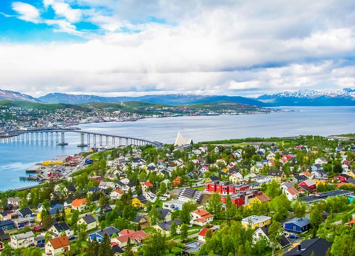

Norway offers visitors an incredible mix of cultural and natural wonders. From cosmopolitan Oslo to its endless snowcapped mountain peaks and deep fjords, there's no end of choices for travelers in the land of the midnight sun and stunning northern lights. Getting around the country is easy, and the country's top-notch transit systems offer some of the best sightseeing opportunities, too, whether by rail or aboard the fantastic coastal steamers. One of the world's most prosperous nations, Norway seems to have a fascinating museum for just about every important aspect of its rich cultural and social history. Do your research, and you'll find fascinating attractions covering everything from the Vikings to seafaring and fishing, as well as art and entertainment. Norway is also rich in spectacular scenery. From its stunning fjords to its spectacular mountains and glaciers, many of which are easily accessible to tourists, you'll find some of the best places to visit in Europe for exciting adventures
Oslo
Oslo is split into clear districts, each with its own character and charm. Previously, the great dividing line between east and west was the Akerselva, and in many ways it still is. The western side is known for its wide streets, entertainment and high housing prices, while the eastern side features small, cosy cafés and free outdoor areas. Some districts are organised around the locals' heavy use of public transport, while others are more car-friendly Common to them all is easy access to most public facilities, such as libraries, schools and health services.
Attraction

Sognefjord |

Pulpit Rock |

Tromso |